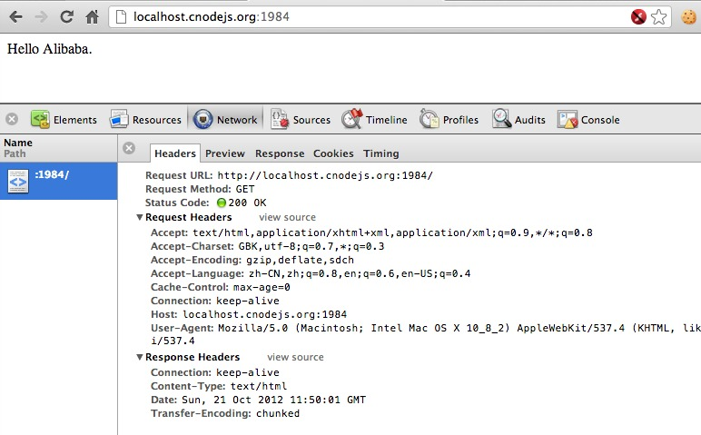
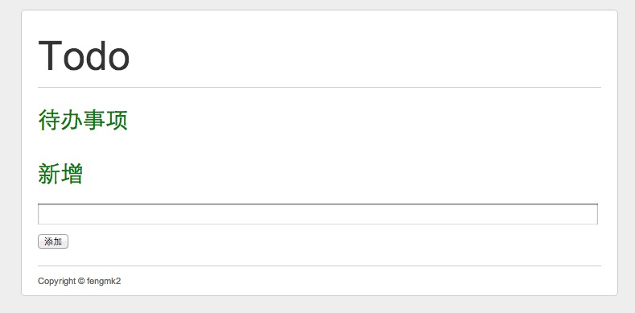
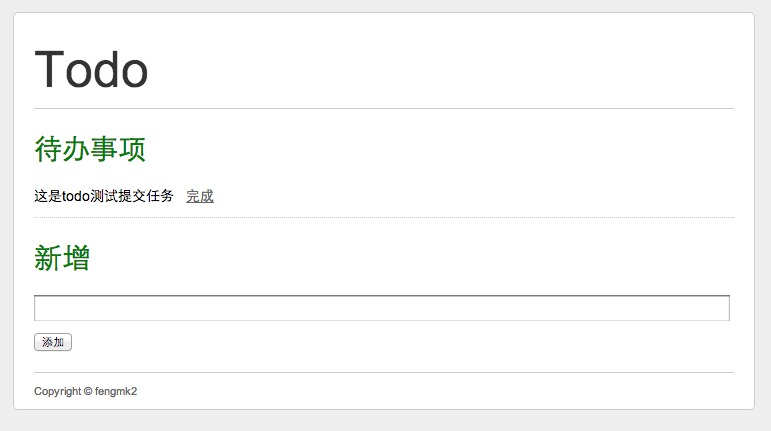
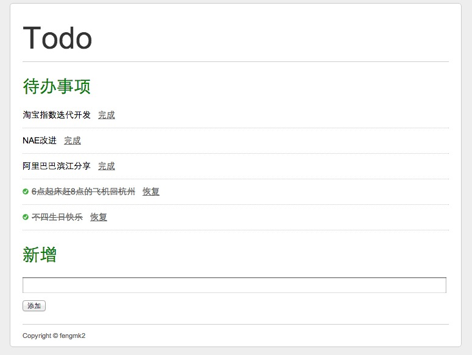
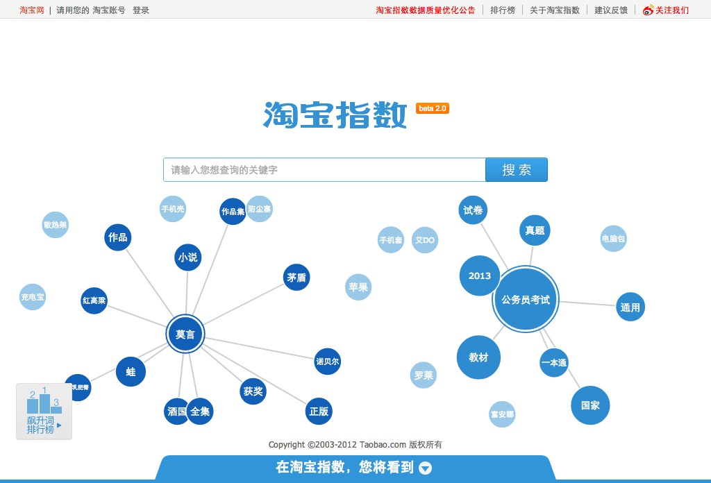
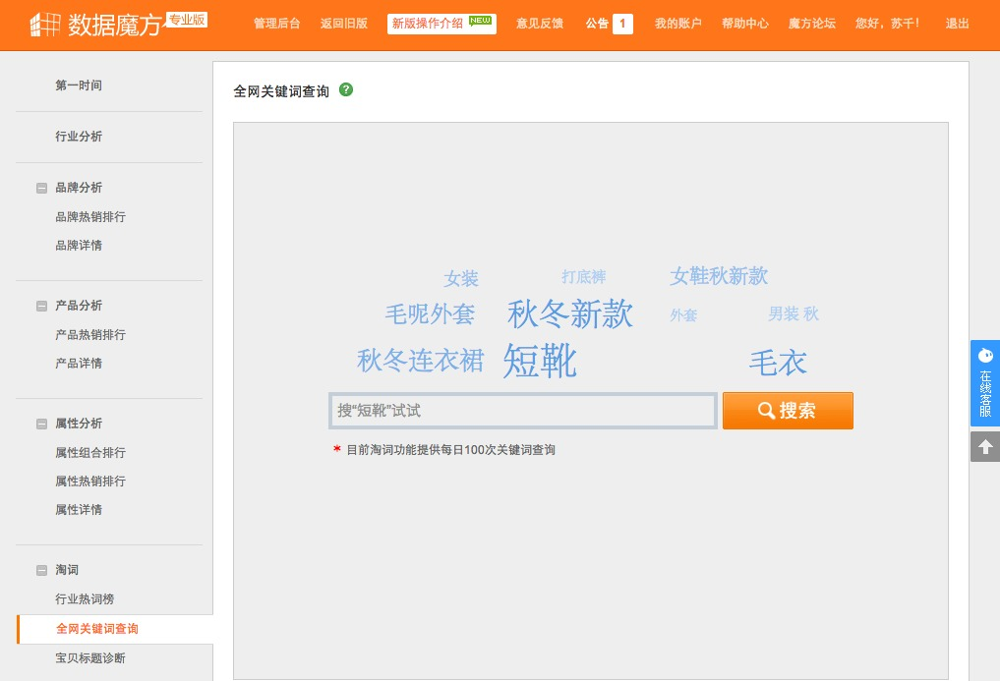
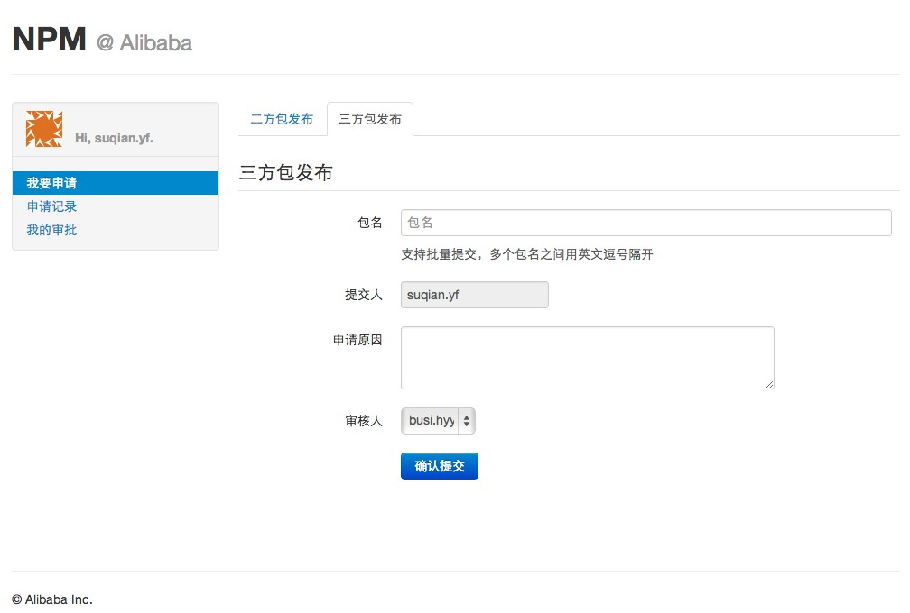
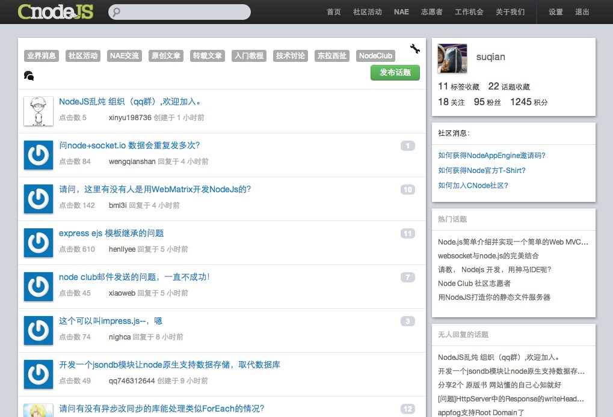

Nodejs的核心关键词


var http = require('http');
http.createServer(function (req, res) {
console.log('%s %s : %j', req.method, req.url, req.headers);
req.on('end', function () {
res.writeHeader(200, { 'Content-Type': 'text/html' });
res.end('Hello QCon Hangzhou');
});
}).listen(1984);
on('end', function () {})
$ node helloworld.js
GET / : {"host":"localhost.cnodejs.org:1984","connection":"keep-alive","cache-control":"max-age=0","user-agent":"Mozilla/5.0 (Macintosh; Intel Mac OS X 10_8_2) AppleWebKit/537.4 (KHTML, like Gecko) Chrome/22.0.1229.79 Safari/537.4","accept":"text/html,application/xhtml+xml,application/xml;q=0.9,*/*;q=0.8","accept-encoding":"gzip,deflate,sdch","accept-language":"zh-CN,zh;q=0.8,en;q=0.6,en-US;q=0.4","accept-charset":"GBK,utf-8;q=0.7,*;q=0.3"}
GET /favicon.ico : {"host":"localhost.cnodejs.org:1984","connection":"keep-alive","accept":"*/*","user-agent":"Mozilla/5.0 (Macintosh; Intel Mac OS X 10_8_2) AppleWebKit/537.4 (KHTML, like Gecko) Chrome/22.0.1229.79 Safari/537.4","accept-encoding":"gzip,deflate,sdch","accept-language":"zh-CN,zh;q=0.8,en;q=0.6,en-US;q=0.4","accept-charset":"GBK,utf-8;q=0.7,*;q=0.3"}
使用 Mongodb 存储，快速实现最简单的两个功能:
|- app.js
|- config.js
|- routes.js
|- package.json
|- views/
|- layout.html
|- index.html
|- public/
|- images/
|- styles/
|- controllers/
|- home.js
|- task.js
|- models/
|- db.js
|- task.js
|- node_modules/
$ npm init
"dependencies": {
"connect": "2.6.0", // web server, static files hosting
"urlrouter": "0.2.3", // url routing
"connect-render": "0.1.7", // ejs template engine helper
"mongoskin": "0.4.4" // mongodb client
}

var home = require('./controllers/home');
// HTTP GET / => home controller
app.get('/', home);
module.exports = function home(req, res, next) {
res.render('index.html', {
tasks: [] // 稍后会增加数据库逻辑
});
};
index.html 模板<div class="box todos">
<h2 class="box">待办事项</h2>
<ul>
<% for (var i = 0; i < tasks.length; i++) {
var task = tasks[i];
var classname = task.finished ? 'class="finished"' : '';
%>
<li <%- classname %>>
<% if (!task.finished) { %>
<%= task.title %>
<a href="/task/<%- task._id %>/finish">完成</a>
<% } else { %>
<del><%= task.title %></del>
<a href="/task/<%- task._id %>/unfinish">恢复</a>
<% } %>
</li>
<% } %>
</ul>
</div>
app.use('/public',
connect.static(path.join(__dirname, 'public')));
<link href="/public/styles/reset.css" rel="stylesheet" type="text/css" />
<link href="/public/styles/index/style.css" rel="stylesheet" type="text/css" />
var task = require('./controllers/task');
app.post('/task', task.add);
<div class="box post">
<h2>新增</h2>
<form action="/task" method="post" id="post_new">
<input type="hidden" name="_csrf" value="<%- _csrf %>" />
<p><input type="text" name="title" class="long_txt" /></p>
<p><input type="submit" class="submit" value="添加" /></p>
</form>
</div>
var Task = require('../models').Task;
exports.add = function (req, res, next) {
var title = req.body.title;
var task = {
title: title,
finished: 0,
created_at: new Date()
};
Task.insert(task, function (err, item) {
if (err) {
return next(err);
}
res.writeHeader(302, {
Location: '/'
});
res.end();
});
};
var Task = require('../models').Task;
module.exports = function home(req, res, next) {
// 按未完成的排前面，然后再按时间倒序显示
var options = {
sort: [ [ 'finished', 'asc' ], [ '_id', 'desc' ] ]
};
Task.findItems({}, options, function (err, tasks) {
if (err) {
return next(err);
}
res.render('index.html', {
tasks: tasks
});
});
};

// GET /task/50843cf924438a2dfa000001/finish
app.get('/task/(:id)/finish', task.finish);
exports.finish = function (req, res, next) {
var tid = req.params.id; // mapping from url
var task = { finished: 1, updated_at: new Date() };
Task.updateById(tid, { $set: task }, function (err, item) {
if (err) {
return next(err);
}
res.writeHeader(302, {
Location: '/'
});
res.end();
});
};





'Thanks') 'end');/
#